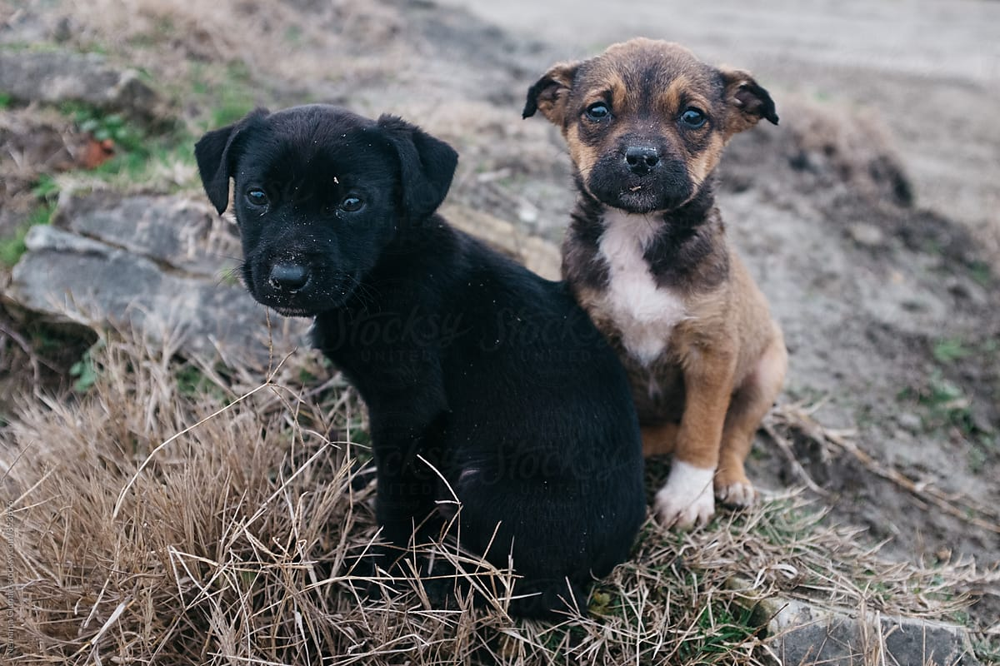
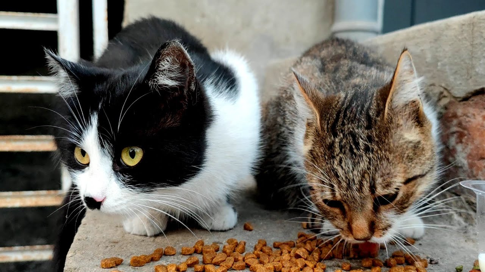

Shots For Strays
Every $5 saves a stray.
Save A Life Now
PromptPay and Credit Cards Accepted
 
Help fund life-saving vaccines for stray dogs and cats around the world. A single donation can be the difference between life and suffering.